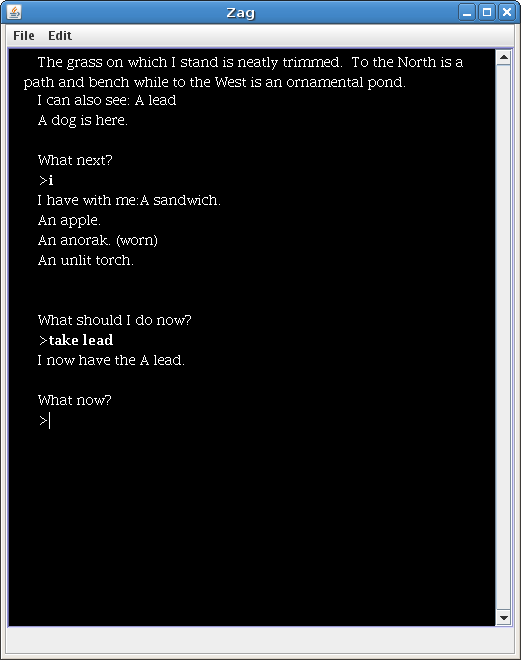

Grassy Area
The grass on which I stand is neatly trimmed. To the North is
a path and bench while to the West is an ornamental pond.
> examine lead
Nothing special. No, really.
> take lead
taken.
>look grass
The grass on which I stand is neatly trimmed.
>w
Ornamental Pond
The sun glitters on the surface of the ornamental pond, whose waters
ripple in the gentle breeze. A path runs North towards a
large tree, while to the East is a grassy area.
In this example, two rooms are created: "Grassy Area",
and "Ornamental
Pod". In this rooms, the title and main descriptions are
provided.
Follow the scenary and plain objects. In the first room, a lead (plain
object) and the grass
(scenary object) are created, providing a
description for both of them. The lead can be taken, so it is a plain
object; the grass is only examined, so it is an scenary object. This
"commands", also include the possiblity to mark an object as clothing,
for example.
Links among rooms are created by simply moving into them or by
signaling the possible movement (this will be shown later). In the
example, there is a connection from the west (the Grassy Area) to the
Pond, and viceversa.
It is also possible to do an inventory (each object separated by commas). All the objects listed are included in the player character.
> i
sandwich,
bag,
apple
These objects must have been examined elsewhere, but they are not needed to be taken: they are plain objects as soon as they appear in an inventory.
Choosing an interesting example
The most famous example adventure is "Ticket", the example that came with the PAWS as a demonstration adventure. I was interested in using that adventure, but I was not willing to type the whole input file for it. So I decided to download the code from the Yeandle's web page, and took the source code of Ticket, ticket.sce, and modified it slightly just in order for Superglus to understand it. Superglus is just an extended PAWS compiler, and I only modified the /OBJ section and created a new entry (transcript) just in order to allow me to save the game as I played it.

So I just compiled Ticket with Superglus and executed it with Zag. It still had a couple of errors, but they were not very relevant for me. I just run through all rooms and examined all objects, as well as doing an inventory.
The next step was to modify the text file obtained so I could use it as input for txtMap. I only had to: a) add a title to each room; b) add a "take" command for all plain objects, and c), avoid loops in visiting some rooms (for example, one room allows the player to go "up" and reach a branch of the tree, and then go "down" and reach the original room). Each room should only be "visited" once, so the code should be arranged this way:
Large Tree
The path curves South and East here beside a large tree.
>examine tree
It's big.
>e to Gravel Path
>up to Branch of the Tree
Branch of the Tree
I am sitting on a branch in a broad leaved tree, the park is spread out
before me, to the East I can see the bus stop through the gate in the
railings.
>examine branch
It is strong, hopefully.
>down to Large Tree
Connections can be signaled this way, without, say, "taking" them. This avoids visiting a room twice, which is not allowed, with the only drawback the reverse connections must be signaled explicitly.
The resulting input text can be found here.
This can be compiled with txtMap. The command should be the following one:
$ txtmap --PL=inform ticket_eng.txt
This tells txtMap to output an Inform source file. There are other plugins, which can be listed with the --PL=? option.
$ inform ticket_eng.inf
Which creates the game file.
Another interesting plugin is the one that generates a group of html files that are linked following the directions of room's links.
$ txtmap --PL=html ticket_eng.txt
Which generates an html file such as the following one:
Links
Superglus:
http://www.caad.es/superglus/
PAWS home page:
http://www.yeandle.plus.com/advent/
txtMap:
http://caad.es/baltasarq/download